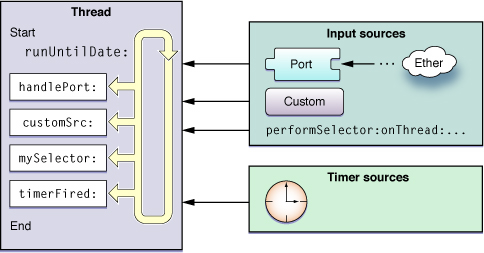
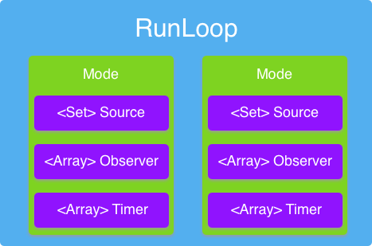
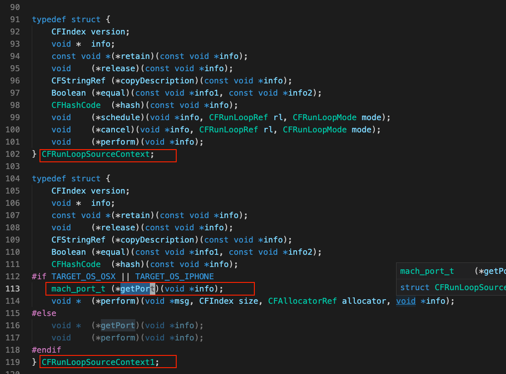
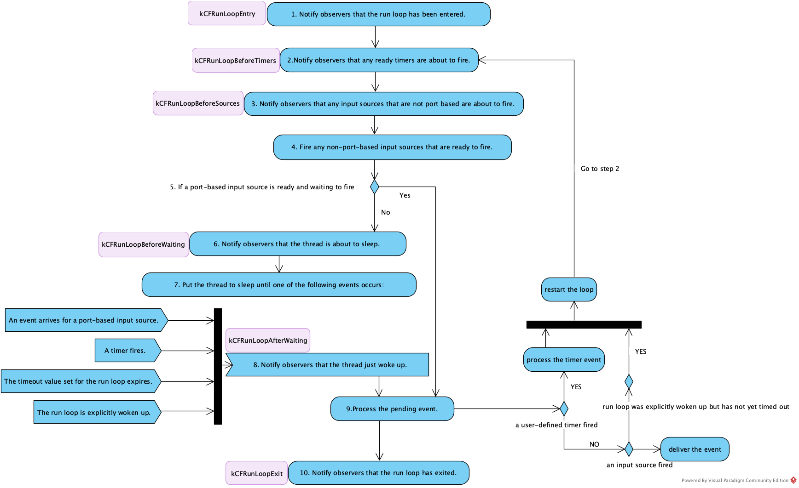

Background
Sometimes, you may want to collect on-device performance metrics in main thread to know how our App performs and help you find more clues to analyse performance issue. MetricKit is a useful utility framework to achieve that. It starts accumulating reports for your app after being called for the first time and delivers reports at most once per day. The reports contain the metrics from the past 24 hours and any previously undelivered daily reports. Then, you can go to Xcode->Organizer->Metric panel to check these info. However, you may want your in-house App Performance Monitoring framework to gain more controls on when to collect metrics, or how to upload it, or collect what you want. Earlier days, Tencent launched a iOS framework called matrix to monitor App performance metrics. When I explored this library, I saw they use CFRunLoop to detect hitch in the thread, like main thread. This intrigued me. So I investigated CFRunLoop to learn more.
What is RunLoop in iOS?
Before talking about RunLoop in iOS, we may have to know something about event loop and thread. In OS/360 Multiprogramming with a Variable Number of Tasks (MVT) in 1967, threads made an early appearance under the name of “tasks”. A thread in computer science is short for a thread of execution. Once the tasks in one Thread is all done, the thread finishes its job and exits. Sometimes, we need a way to keep it alive and handling events. Then, comes the event loop. The psudo code for event loop is like this:
1 | function loop |
In Wikipedia, event loop is a programming construct or design pattern that waits for and dispatches events or messages in a program. In this event loop, it keeps waiting events -> receive events -> handle events until the exit condition is met.
Run loops are part of the fundamental infrastructure associated with threads. A run loop is an event processing loop that you use to schedule work and coordinate the receipt of incoming events. The purpose of a run loop is to keep your thread busy when there is work to do and put your thread to sleep when there is none.
A CFRunLoop object monitors sources of input to a task and dispatches control when they become ready for processing.
A run loop receives events from two different types of sources. Input sources deliver asynchronous events, usually messages from another thread or from a different application. Timer sources deliver synchronous events, occurring at a scheduled time or repeating interval.
It can handle
user input devices
port objects
network connections
periodic or time-delayed events
asynchronous callbacks

In Apple’s doc, this kind of event loop is implemented by CFRunLoop in low-level. In cocoa, the object is an instance of NSRunLoop There is exactly one run loop per thread.
Apple provides two APIs to get runloop object
CFRunLoopGetMain()// the main CFRunLoop objectCFRunLoopGetCurrent()// CFRunLoop object for the current thread
RunLoop Mode
A run loop mode is a collection of input sources and timers to be monitored and a collection of run loop observers to be notified. Each time you run your run loop, you specify (either explicitly or implicitly) a particular “mode” in which to run.During that pass of the run loop, only sources associated with that mode are monitored and allowed to deliver their events. — doc
A run loop mode contains a set of CFRunLoopSource, a list of CFRunLoopTimer and CFRunLoopObservers. They are all inputs for runloop.

Inputs
Three kinds of inputs can be monitored by a run loop
- CFRunLoopSource
- CFRunLoopTimer
- CFRunLoopObservers
Input Source - CFRunLoopSource
A CFRunLoopSource object is an abstraction of an input source that can be put into a run loop. Input sources typically generate asynchronous events, such as messages arriving on a network port or actions performed by the user.
1 | struct __CFRunLoopSource { |
_context is a union type. A union looks like a structure, but it will use the memory space for just one of the fields in its definition. So the _context is either an CFRunLoopSourceContext structure or CFRunLoopSourceContext1 structure.
Two categories of Input Source
As it is mentioned in this doc, we mainly care about two categories, port-base input sources, source1, and non-port-based input sources, source0, also called custom sources.
- Version 0 sources, so named because the
versionfield of their context structure is 0, are managed manually by theapplication.- When a source is ready to fire, some part of the
application, perhaps code on a separatethreadwaiting for an event, must callCFRunLoopSourceSignal(_:)to tell the run loop that the source is ready to fire. - custom input source that allows you to perform a selector on any thread. Like
performSelectorOnMainThread:withObject:waitUntilDone:,performSelector:withObject:afterDelay:. see more - Defining a Custom Input Source
- When a source is ready to fire, some part of the
- Version 1 sources are managed by the run loop and kernel.
- These sources use
Mach portsto signal when the sources are ready to fire. - A source is automatically
signaled by the kernelwhen a message arrives on the source’s Mach port. - see Configuring a Port-Based Input Source

- These sources use
bits field
It seems that bits field is used to mark the status of the CFRunLoopSouceRef .
1 | CF_INLINE Boolean __CFRunLoopSourceIsSignaled(CFRunLoopSourceRef rls) { |
CFRunLoopSourceSignal is used to signals a version 0 source , marking it as ready to fire. It actually updated the bits in the CFRunLoopSouceRef structure.
1 | void CFRunLoopSourceSignal(CFRunLoopSourceRef rls) { |
CFRunLoopTimer
Besides CFRunLoopSource, there is another input for runloop. Timer Source, CFRunLoopTimer, which represents a specialized run loop source that fires at a preset time in the future. see doc for CFRunLoopTimer
There are two conditions for a timer to be fired:
- one of the run loop modes to which the timer has been added is running
- the timer’s firing time has passed
a timer is not a real-time mechanism
- Like input sources, timers are associated with specific modes of your run loop. If a timer is not in the mode currently being monitored by the run loop, it does not fire until you run the run loop in one of the timer’s supported modes.
- If a timer fires when the run loop is in the middle of executing a handler routine, the timer waits until the next time through the run loop to invoke its handler routine.
- If the run loop is not running at all, the timer never fires.
In Cocoa, you can create and schedule a timer all at once using either of these class methods:
1 | scheduledTimerWithTimeInterval:target:selector:userInfo:repeats: |
You can also create your NSTimer object and then add it to the run loop using the addTimer:forMode: method of NSRunLoop.
see how to configure timer source here
RunLoopObserver
How to use observer
- We can use these two APIs to create RunLoopObserver and associated it with handlers.
- CFRunLoopObserverCreate(_:_:_:_:_:_:)
- CFRunLoopObserverCreateWithHandler(_:_:_:_:_:)
add the observer into the runloop
1
2
3
4
5
6
CFRunLoopObserverRef runloopObserver = CFRunLoopObserverCreateWithHandler(kCFAllocatorDefault, kCFRunLoopBeforeWaiting, YES, 0, ^(CFRunLoopObserverRef observer, CFRunLoopActivity activity) {
// handler code here
});
CFRunLoopAddObserver(CFRunLoopGetMain(), runloopObserver, kCFRunLoopDefaultMode);Observe specific RunLoop Activity
RunLoop Activity
The run loop stages in which an observer is scheduled are selected when the observer is created with
CFRunLoopObserverCreate. -doc
There are several kinds of RunLoop Activity for CFRunLoop. You can associate run loop observers with these RunLoopActivity
1 | /* Run Loop Observer Activities */ |
https://developer.apple.com/documentation/corefoundation/cfrunloopactivity
Run Loop Sequence of Events
According to apple doc, when runloop running in a thread, it processes pending events and generates notifications for attached observers. Briefly, it works as the follow diagram shows.

The implementation is in CFRunLoopRunSpecific and __CFRunLoopRun in CFRunloop.c .
Use case
Detect hitch block in main thread
In Tencent matrix, it leverages the Run Loop notifications to record timestamp when these notifications sent.
create and add RunLoopObserver to current RunLoop CFRunLoopAddObserver
record timestamp in callback function invoked when the observer runs
- start a monitor thread, then check periodically
- get thetimestamp diff to see if it is greater than threshold, g_RunLoopTimeOut
I did a small experiment to better understand it. I added a RunLoop Observer to the runloop in main thread. Then calculate the time gap between kCFRunLoopBeforeTimers notification in two continuous loop.
1 | // 1. create runloop observer |
1 | // 3. implemented callback for RunLoop observer |
Theoretically, the time diff between two continuous kCFRunLoopBeforeTimers notification should be within 16.67ms to achieve smooth user experience in main thread, which means RunLoop runs 60 times per second. In the following log, one frame takes about 72ms to executed.
However, since I put the logger in kCFRunLoopBeforeTimers, this may not be a hitch. It could be caused thread was sleeping while there is no event come.
1 | [RY]kCFRunLoopBeforeTimers called 3.628173828125 |
Runloop in React Native
make JSThread long-lived
- create the JSThread, called
com.facebook.react.JavaScript. In react native, this is a secondary thread besides main thread where JavaScript code runs, function calls to native implementation are made etc… - run the runloop explicitly in JSThread to make it long-lived
enqueue a block object on a given runloop
- use
CFRunLoopPerformBlockto enqueue a block tokCFRunLoopCommonModesmode in current runloop. This function is similar to Cocoa’s performSelector:onThread:withObject:waitUntilDone: - wake up runloop. The block will be executed when the runloop runs in
kCFRunLoopCommonModesmode
See More
- https://developer.apple.com/library/archive/documentation/Cocoa/Conceptual/Multithreading/RunLoopManagement/RunLoopManagement.html#//apple_ref/doc/uid/10000057i-CH16-SW1
- https://blog.ibireme.com/2015/05/18/runloop/
- https://opensource.apple.com/tarballs/CF/
- https://developer.apple.com/documentation/corefoundation
- https://github.com/apple/swift-corelibs-foundation/
scan qr code and share this article